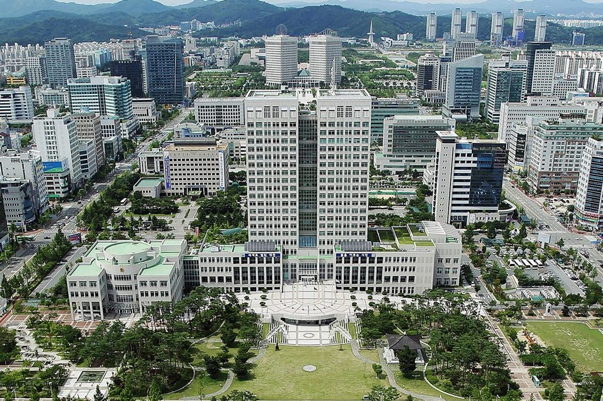

대전충남녹색연합, 주차장 태양광 의무 대상 30곳 중 설치 1곳…대전시에 재생에너지 중심 로드맵 촉구

검토 중인 13곳만 지어도 약 4,636kW·연 592만kWh로 1,500여 가구분 추산…수소·복합화력 중심 제7차 지역에너지계획 전면 재수정 요구
대전충남녹색연합이 주차장 태양광 설치 의무화가 시행된 지 1년이 다 되도록 대전의 의무 대상 30곳 가운데 1곳에만 설비가 들어섰다며, 대전시에 재생에너지 중심의 에너지 전환 로드맵을 세우라고 요구했다. 녹색연합이 첫 법정 재생에너지의 날을 하루 앞둔 22일 낸 성명에 따르면 5개 자치구와 교육청 소관 의무 대상 주차장 30곳 중 설치를 마친 곳은 1곳이고, 13곳은 검토 중, 9곳은 면제, 7곳은 설치 불가로 분류됐으며 계통 연계가 가능한지 확인된 곳은 2곳뿐이다. 녹색연합은 검토 중인 13곳(약 4만6,360㎡)에 차양형 태양광을 올리면 약 4,636kW 규모가 되고, 하루 평균 3.5시간 발전을 기준으로 연간 약 592만2,515kWh, 1,500여 가구가 1년 동안 쓸 전기를 만들 수 있다고 추산했다. 또 대전시 에너지 조례가 재생에너지법 개편과 수소법 분리 이전의 명칭·체계에 머물러 있고, 제7차 지역에너지계획은 복합화력·수소·연료전지 등 온실가스를 내는 에너지원이 대부분이며, 2026~2030년 중기지방재정계획과 예산에는 주차장 태양광 몫조차 잡히지 않았다고 지적했다. 녹색연합은 1년 동안의 성과가 주차장 1곳이라는 사실이 "부끄러운 일"이라며 제7차 계획 전면 재수정, 재생에너지 목표 확대, 시장 직속 추진체계 구축, 에너지 수요 감축을 촉구했다. 대전시의 입장은 나오지 않았다.
시민에너지 관점
의무 대상 30곳 중 1곳이라는 숫자는 법에 의무를 적어 넣는 것만으로는 재생에너지가 늘지 않는다는 점을 보여 준다. 계통과 예산이 걸림돌이라는 반론이 나올 수 있지만, 30곳 가운데 계통 연계 여부를 확인한 곳이 2곳뿐이라는 것은 걸림돌을 따져 보기 전에 손을 놓았다는 뜻으로 보인다. 공공 주차장은 시민이 함께 출자해 발전소를 세우고 수익을 지역에 돌리기에 알맞은 자리이며, 시 예산이 모자라면 시민 출자로 메우고 시민이 주인이 되는 길이 있다. 대전시는 검토 중인 13곳의 계통 여건부터 공개하고, 시민과 협동조합이 참여할 수 있는 공모를 열어야 한다.
출처: 디트NEWS24 2026-10-22 유솔아 원문 보기
大田忠南緑色連合、駐車場太陽光の設置義務対象30か所のうち設置は1か所…大田市に再生可能エネルギー中心のロードマップを要求
検討中の13か所だけでも約4,636kW・年592万kWhで1,500余世帯分と試算…水素・複合火力中心の第7次地域エネルギー計画の全面見直しを要求
大田忠南緑色連合は、駐車場への太陽光設置の義務化が施行されて1年近くになるのに、大田市内の義務対象30か所のうち設備が入ったのは1か所にとどまるとして、大田市に再生可能エネルギー中心のエネルギー転換ロードマップをつくるよう求めた。初の法定「再生可能エネルギーの日」を翌日に控えた22日に同連合が出した声明によると、5つの自治区と教育庁が所管する義務対象の駐車場30か所のうち設置を終えたのは1か所で、13か所は検討中、9か所は免除、7か所は設置不可に分類され、系統連系が可能かどうか確認されたのは2か所だけだという。同連合は、検討中の13か所（約4万6,360㎡）に日よけ型の太陽光を載せれば約4,636kWの規模になり、1日平均3.5時間の発電で年間約592万2,515kWh、1,500余世帯が1年間に使う電気をつくれると試算した。また、大田市のエネルギー条例が再生可能エネルギー法の改編と水素法の分離以前の名称・体系のままであること、第7次地域エネルギー計画は複合火力・水素・燃料電池など温室効果ガスを出すエネルギー源が大半であること、2026〜2030年の中期地方財政計画と予算には駐車場太陽光の分すら計上されていないことを指摘した。同連合は1年間の成果が駐車場1か所という事実は「恥ずかしいこと」だとして、第7次計画の全面見直し、再生可能エネルギー目標の拡大、市長直属の推進体制の構築、エネルギー需要の削減を求めた。大田市の立場は示されていない。
市民エネルギーの視点
義務対象30か所のうち1か所という数字は、法律に義務を書き込むだけでは再生可能エネルギーは増えないことを示している。系統や予算が障害だという反論もありうるが、30か所のうち系統連系の可否を確認したのが2か所だけというのは、障害を見極める前に手を止めていたことを意味するように見える。公共の駐車場は、市民が共同で出資して発電所を建て、収益を地域に還元するのにふさわしい場所であり、市の予算が足りなければ市民の出資で補い、市民が持ち主になる道がある。大田市は検討中の13か所の系統条件をまず公開し、市民と協同組合が参加できる公募を開くべきだ。
出典: DTNews24 2026-10-22 Yu Sol-a 原文を読む
大田忠南绿色联合：停车场太阳能强制安装对象30处仅建成1处，敦促大田市制定以可再生能源为中心的路线图
仅建设正在研究中的13处即可达约4,636kW、年发电592万kWh，约合1,500余户用电…要求全面修改以氢能和联合循环发电为主的第7次地区能源计划
韩国环保团体大田忠南绿色联合表示，停车场强制安装太阳能的制度实施将近一年，大田市内30处强制对象中只有1处装上了设备，敦促大田市制定以可再生能源为中心的能源转型路线图。该联合在首个法定“可再生能源日”前一天的22日发表声明称，5个自治区和教育厅管辖的30处强制对象停车场中，已完成安装的只有1处，13处正在研究，9处获豁免，7处被列为无法安装，确认能否并网的只有2处。该联合估算，若在正在研究的13处（约4万6,360平方米）安装遮阳棚式太阳能，规模约为4,636kW，按日均发电3.5小时计算，年发电量约592万2,515kWh，可满足1,500余户家庭一年的用电。该联合还指出，大田市能源条例仍停留在可再生能源法改编和氢能法分立之前的名称与体系，第7次地区能源计划中联合循环发电、氢能、燃料电池等排放温室气体的能源占了大部分，2026～2030年中期地方财政计划和预算中连停车场太阳能的份额都没有列入。该联合称，一年的成果只有1处停车场是“令人羞愧的事”，要求全面修改第7次计划、扩大可再生能源目标、建立市长直属的推进体系并削减能源需求。大田市尚未表明立场。
市民能源视角
30处强制对象中只有1处，这一数字说明仅把义务写进法律并不能让可再生能源增加。或许有人会说电网和预算是障碍，但30处中只有2处确认了能否并网，这看起来意味着在弄清障碍之前就已经停下了脚步。公共停车场适合由市民共同出资建设电站、把收益返还地方；如果市财政不足，可以用市民出资来补充，让市民成为电站的主人。大田市应首先公开正在研究的13处的电网条件，并开放市民和合作社可以参与的公开招募。
来源: DTNews24 2026-10-22 Yu Sol-a 查看原文
Daejeon-Chungnam Green Korea says only 1 of 30 car parks required to install solar has done so, urges Daejeon to adopt a renewables-first roadmap
Building just the 13 sites under review would add about 4,636 kW and 5.92 million kWh a year, enough for some 1,500 households; group demands a full rewrite of the hydrogen- and gas-heavy 7th regional energy plan
Daejeon-Chungnam Green Korea, an environmental group, said that nearly a year after solar panels became mandatory at certain car parks, only 1 of the 30 sites covered in Daejeon has installed them, and called on the city to draw up an energy transition roadmap centred on renewable energy. According to a statement the group issued on October 22, the day before Korea's first statutory Renewable Energy Day, of the 30 car parks under the five district offices and the education office that are subject to the rule, 1 has completed installation, 13 are under review, 9 are exempt and 7 have been classed as unsuitable, and whether a grid connection is possible has been checked at only 2. The group estimated that solar canopies over the 13 sites under review, about 46,360 square metres, would come to about 4,636 kW and, at an average of 3.5 hours of generation a day, produce about 5,922,515 kWh a year, enough electricity for some 1,500 households for a year. It also said Daejeon's energy ordinance still uses the names and structure in place before the renewable energy law was reorganised and hydrogen was split into a separate act, that the 7th regional energy plan relies mostly on greenhouse-gas-emitting sources such as combined-cycle power, hydrogen and fuel cells, and that the 2026-2030 mid-term local fiscal plan and budget set aside nothing even for car-park solar. Calling it "shameful" that a single car park is all the city has to show for a year, the group demanded a full revision of the 7th plan, higher renewable targets, a renewables task force reporting directly to the mayor and cuts in energy demand. The city has not responded.
Citizen Energy View
One installation out of 30 required sites shows that writing an obligation into law does not by itself add renewable energy. Some may argue that the grid and the budget are the obstacles, but checking grid access at only 2 of the 30 sites suggests the city stopped before it had even examined those obstacles. Public car parks are well suited to plants that citizens fund together, with the returns going back to the community, and where the city budget falls short, citizen investment can fill the gap and make residents the owners. Daejeon should start by publishing the grid conditions at the 13 sites under review and open a call that citizens and cooperatives can join.
Source: DTNews24 2026-10-22 Yu Sol-a Read the original